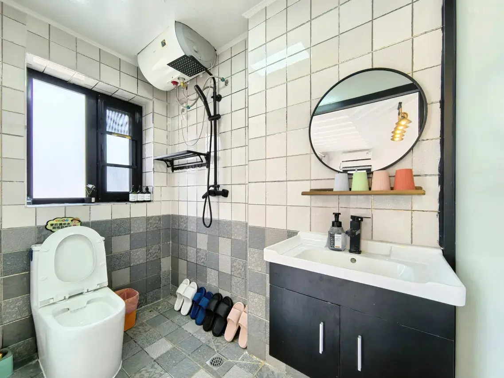
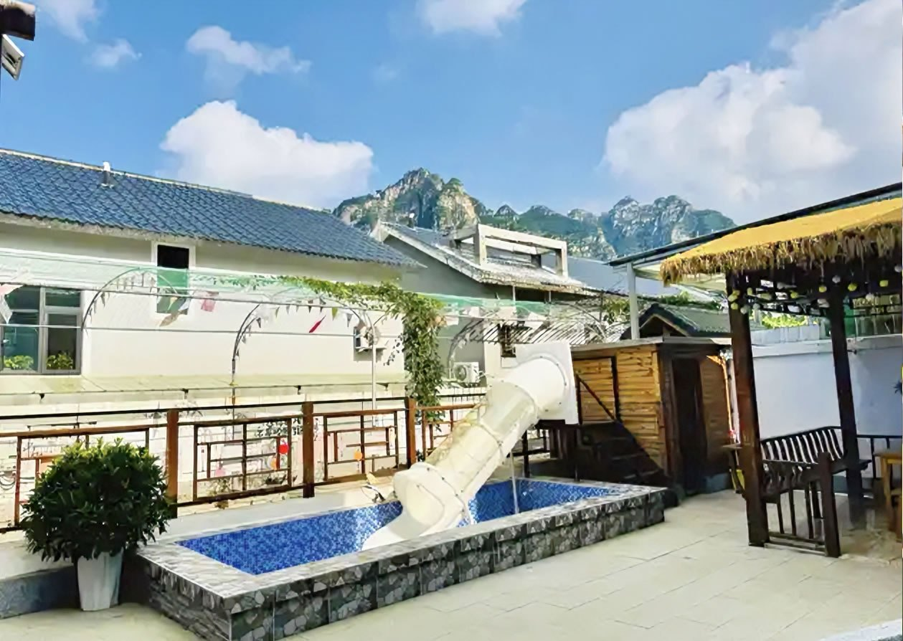
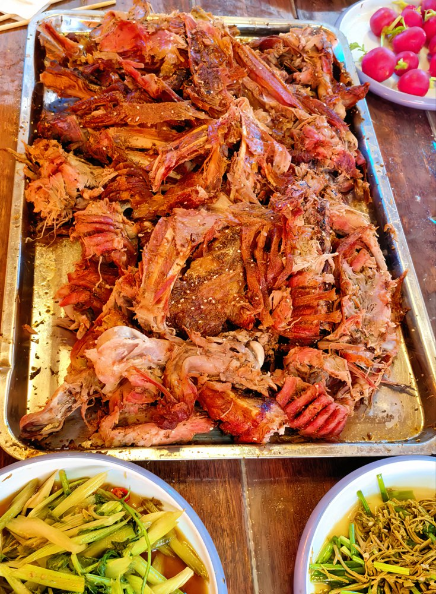

十渡暑假亲子游
带娃暑假怎么玩十渡？少赶路，多玩水
带孩子来十渡，核心不是打卡最多景区，而是让孩子有水玩、有地方跑，大人不用一直开车和排队。住在九渡村附近的栖犀小院，可以把拒马河、轻量景区和院内玩水串成一个更轻松的两天一晚。

带娃来十渡，先避开三个误区


亲子玩法一：拒马河边轻松玩
对年龄比较小的孩子来说，拒马河边散步、看山、拍照、踩水边，比高强度景区更友好。栖犀小院靠近十渡核心区，傍晚去河边走走，回来继续在院子里玩水和吃饭，节奏不会太累。
如果孩子年纪小，建议第一天不要急着安排蹦极、飞拉达、长时间登山这类项目。先让孩子适应环境，大人也不用一到十渡就进入“带娃赶路模式”。
亲子玩法二：轻量景区和玩水项目
聚龙湾、东湖港、部分玻璃栈道和漂流项目，都可以根据孩子年龄和当天体力选择。小一点的孩子更适合看景、短时间玩水和轻松项目；年龄大一些的孩子，可以考虑卡丁车、山地车、漂流、玻璃栈道等。
亲子玩法三：晚上回小院玩
很多亲子游真正累的不是白天，而是晚上还要找地方吃饭、买东西、哄孩子。栖犀小院适合把晚上的时间留在院子里：孩子可以在儿童戏水泳池玩，大人可以烧烤、做饭、聊天，几家人也能聚在公共空间里。
小院共7间客房，均带独立卫浴，可住约17-20人。两三家人一起带娃出行，不用分散住在不同地方，孩子之间也有伴。




带娃两天一晚建议路线
常见问题
带娃去十渡住哪里方便？
建议住十渡核心区、九渡村或拒马河附近，方便吃饭、购物和去景区。栖犀小院位于九渡村别墅区，适合亲子家庭和多人包院。
小朋友适合玩十渡漂流吗？
要看孩子身高、年龄、胆量和景区安全要求。建议出发前向景区确认，年龄小的孩子可以先选择河边散步、院内玩水和轻量景区。
栖犀小院适合几家人一起带娃住吗？
适合。小院共7间客房，均带独立卫浴，可住约17-20人，有儿童戏水泳池、烧烤、KTV、麻将棋牌和公共空间。